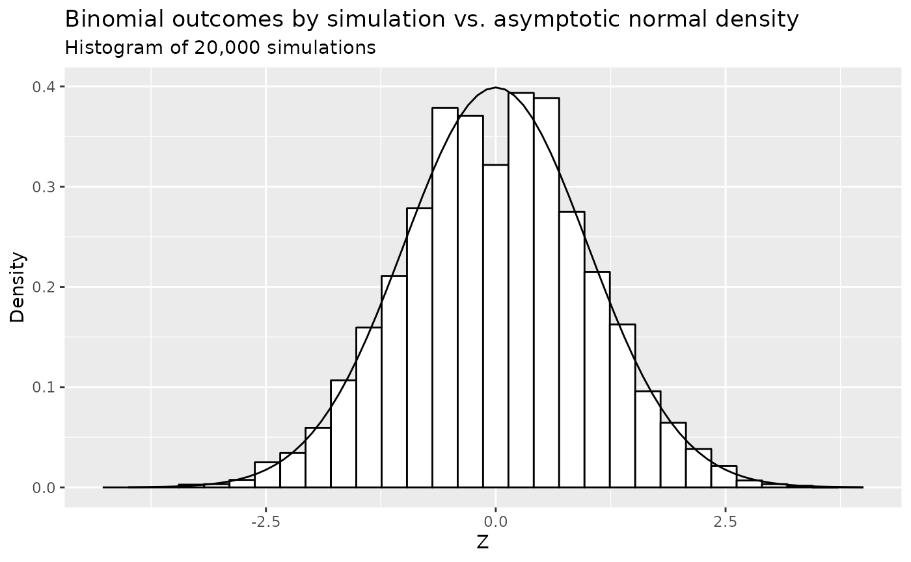

Group Sequential Design for Binary Outcomes
Source:vignettes/story_risk_difference.Rmd
story_risk_difference.RmdOverview
We consider group sequential design examining the risk difference between two treatment groups for a binary outcome. There are several issues to consider:
- The measure of treatment difference or natural parameter; we focus on risk difference.
- Incorporation of both null and alternate hypothesis variances.
- Superiority, non-inferiority and super-superiority designs.
- Stratified populations.
- Fixed and group sequential designs.
For single stratum designs, we focus on sample size or power using the method of Farrington and Manning (1990) for a trial to test the difference between two binomial event rates. The routine can be used for a test of superiority, non-inferiority or super-superiority. For a design that tests for superiority, the methods are consistent with those of Fleiss, Tytun, and Ury (1980), but without the continuity correction. Methods for sample size and power are the same as gsDesign::nBinomial() when testing on the risk-difference scale for a single stratum. This is also consistent with the Hmisc R package routines bsamsize() and bpower() for superiority designs.
For trials with multiple strata, testing for a risk difference is often done by weighting each stratum according to the inverse of the variance (Mantel and Haenszel (1959)). Since risk differences may also be assumed to be different for different strata, we will also explore weighting by strata sample sizes as in Mehrotra and Railkar (2000a).
The focus here is for sample sizes that are large enough for asymptotic theory to work well without continuity corrections. The concepts are incorporated in the following functions intended for use in fixed and group sequential designs:
-
gs_info_rd()to support asymptotic variance and statistical information calculation. -
gs_power_rd()to support power calculations. -
gs_design_rd()to support sample size calculations.
Simulation is used throughout to check the examples presented.
Notation
\(K\): total number of analyses (including the final analysis) in the group sequential design. For fixed design, \(K= 1\).
\(S\): total number of strata. If the population is un-stratified population, then \(S=1\).
\(w_{s,k}\): the underlying weight assigned for the \(s\)-th strata at the \(k\)-th analysis. WHY SWITH ORDER OF s, k FROM w?
\(\widehat w_{s,k}\): the estimated weight assigned for the \(s\)-th strata at the \(k\)-th analysis.
\(N_{C,k,s}, N_{E,k,s}\): the planned sample size in the control/treatment group at the \(k\)-th analysis of the \(s\)-th strata.
\(\widehat N_{C,k,s}, \widehat N_{E,k,s}\): the observed sample size in the control/treatment group at the \(k\)-th analysis of the \(s\)-th strata.
\(r\): planned randomization ratio, i.e., \[ r = N_{E,k,s} / N_{C,k,s} \;\; \forall k = 1, \ldots, K \;\; \text{and} \;\; s = 1, \ldots, S. \]
\(p_{C,s}, p_{E,s}\): the planned rate of the control/treatment arm, i.e., the independent observations in the control/treatment group with a binary outcome that is observed with probability \(p_{C,s}\) at any \(k\)-th analysis of the \(s\)-th strata.
\(d\): an indicator whether is an outcome is failure (bad outcome) or response (good outcome), i.e., \[ d = \left\{ \begin{array}{lll} -1 & \text{if } p_{C,s} < p_{E,s} & \text{the control arm is better}\\ 1 & \text{if } p_{C,s} > p_{E,s} & \text{the treatment arm is better}\\ \end{array} \right. \] Here we assume if \(\exists s^* \in \{1, \ldots, S\}\), s.t., \(p_{C,s^*} < p_{E,s^*}\), then \(p_{C,s} < p_{E,s}, \forall s \in \{1, \ldots, S\}\), and vice versa.
\(X_{C,k,s}, X_{E,k,s}\): random variables indicating the number of subjects failed in control/treatment arm, i.e., \(X_{C,k,s} \sim \hbox{Binomial}(N_{C,k,s}, p_{C,k,s})\), \(X_{E,k,s} \sim \hbox{Binomial}(N_{E,k,s}, p_{E,k,s})\) at the \(k\)-th analysis of the \(s\)-th strata.
\(x_{C,k,s}, x_{E,k,s}\): the observed outcome of \(X_{C, k, s}, X_{E, k, s}\) at the \(k\)-th analysis of the \(s\)-th strata, respectively.
\(\widehat p_{C,k,s}, \widehat p_{E,k,s}\): observed rates of the control/treatment group at the \(k\)-th analysis of the \(s\)-th strata, i.e., \[ \widehat p_{C,k,s} = x_{C,k,s} / \widehat N_{C,k,s}.\\ \widehat p_{E,k,s} = x_{E,k,s} / \widehat N_{E,k,s}. \]
\(\delta_{s}^{null}\): the planned risk difference under \(H_0\) at any \(k\)-th analysis of the \(s\)-th strata.
\(\delta_{s}\): the planned risk difference under \(H_1\) at any \(k\)-th analysis of the \(s\)-th strata is denoted by \[ \delta_{s} = |p_{C,s} - p_{E,s}|. \]
\(\hat\delta_{s}\): estimation of risk difference with \[ \widehat\theta_{k,s} = |\widehat p_{C,k,s} - \widehat p_{E,k,s}| \] We have \(E(\widehat\theta_{k,s}) = \theta_{s}, \;\forall k = 1, \ldots, K\).
Testing
The test statistics at the \(k\)-th analysis is \[ Z_{k} = \frac{ \sum_{s=1}^S \widehat w_{s,k} \; |\widehat \delta_{k,s} - \delta_{s}^{null} | }{ \sqrt{\sum_{s=1}^S \widehat w_{s,k}^2 \widehat\sigma_{H_0,k,s}^2} } \] where \(\widehat\sigma^2_{k,s} = \widehat{\hbox{Var}}(\widehat p_C -\widehat p_E)\). And the value of \(\widehat\sigma^2_{k,s}\) depends on the hypothesis and design, i.e., whether it is a superiority design, or non-inferiority design, or super-superiority design. We will discuss \(\widehat\sigma^2_{k,s}\) in the following 3 subsections.
Superiority Design
A superiority design (\(\delta_{s}^{null} = 0\)) is to show that experimental group is superior to the control group above some thresholds. Its hypothesis is \[ H_0: \delta_{s} = 0 \text{ vs. } H_1: \delta_{s} > 0, \; \forall k = 1, \ldots, K, s = 1, \ldots, S \]
-
Variance per strata per analysis:
Under the null hypothesis, we have \[ \begin{array}{ll} \sigma^2_{H_0,k,s} & = \text{Var}(p_C - p_E | H_0) = p_{k,s}^{pool} \left(1 - p^{pool}_{k,s} \right) \left(\frac{1}{N_{C,k,s}} + \frac{1}{N_{E,k,s}} \right), \\ \widehat\sigma^2_{H_0,k,s} & = \widehat{\text{Var}}(\hat p_C - \hat p_E | H_0) = \widehat p_{k,s}^{pool} \left(1 - \widehat p^{pool}_{k,s} \right) \left(\frac{1}{N_{C,k,s}} + \frac{1}{N_{E,k,s}} \right), \end{array} \] where \(p_{k,s}^{pool} = (p_{C,s} N_{C,k,s} + p_{E,s} N_{E,k,s}) / (N_{C,k,s} + N_{E,k,s})\) and \(\widehat p_{k,s}^{pool} = (x_{C,k,s} + x_{E,k,s}) / (\widehat N_{C,k,s} + \widehat N_{E,k,s}).\)
Under the alternative hypothesis, we have \[ \begin{array}{ll} \sigma_{H_1,k,s}^2 & = \text{Var}(p_C - p_E | H_1) = \frac{p_{C,s} (1- p_{C,s})}{N_{C,k,s}} + \frac{p_{E,s} (1 - p_{E,s})}{N_{E,k,s}} \\ \widehat\sigma_{H_1,k,s}^2 & = \widehat{\text{Var}}(\hat p_C - \hat p_E | H_1) = \frac{\widehat p_{C,k,s} (1- \widehat p_{C,k,s})}{N_{C,k,s}} + \frac{\widehat p_{E,k,s} (1 - \widehat p_{E,k,s})}{N_{E,k,s}} \end{array} \] where \(\widehat p_{C,k,s} = x_{C,k,s} / N_{C,k,s} \text{ and } \widehat p_{E,k,s} = x_{E,k,s} / N_{E,k,s}\). Testing will be one-sided at level \(\alpha \in (0, 1)\) and the null hypothesis will be rejected if \(Z_k\) cross the upper boundary. And the upper boundary can be either fixed or derived from spending functions.
-
Standardized treatment effect per analysis:
Under the null hypothesis, we have \[ \theta_{H_0,k} = 0 \\ \widehat \theta_{H_0,k} = 0 \]
Under the alternative hypothesis, we have \[ \begin{array}{ll} \theta_{H_1,k} & = \frac{\sum_{s=1}^S w_{k,s} (p_{C,s} - p_{E,s})}{\sqrt{\sum_{s=1}^S w_{k,s}^2 \sigma_{H_1, k,s}^2}}\\ \widehat\theta_{H_1,k} & = \frac{ \sum_{s=1}^S \widehat w_{k,s} (\widehat p_C - \widehat p_E) }{ \sqrt{\sum_{s=1}^S \widehat w_{k,s}^2 \widehat\sigma_{H_1, k,s}^2} }. \end{array} \]
-
Standardized information per analysis:
Lachin (2009) or Lachin (1981) provide fixed sample size calculations based on the values \(\psi_0\) under the null hypothesis and \(\psi_1\) under the alternate hypothesis. Here we propose using the same variance calculations to compute statistical information for a group sequential design and apply the formulation for power and sample size calculation in the vignette Computing Bounds Under Non-Constant Treatment Effect.
Under the null hypothesis, we have \[ \begin{array}{ll} \mathcal I_{H0,k} & = \left[ \sum_{s=1}^S w_{k,s}^2 \frac{p_{k,s}^{pool} (1 - p_{k,s}^{pool})}{N_{C, k, s}} + w_{k,s}^2 \frac{p_{k,s}^{pool} (1 - p_{k,s}^{pool})}{N_{E, k, s}} \right]^{-1} \\ \widehat{\mathcal I}_{H0,k} & = \left[ \sum_{s=1}^S \widehat w_{k,s}^2 \frac{\widehat p_{k,s}^{pool} (1 - \widehat p_{k,s}^{pool})}{\widehat N_{C,k,s}} + \widehat w_{k,s}^2 \frac{\widehat p_{k,s}^{pool} (1 - \widehat p_{k,s}^{pool})}{\widehat N_{C,k,s}} \right]^{-1} \end{array} \]
Under the alternative hypothesis, we have \[ \begin{array}{ll} \mathcal I_{H1,k} = \left[ \sum_{s=1}^S w_{k,s}^2 \frac{p_{C,k,s} (1 - p_{C,k,s})}{N_{C,k,s}} + \sum_{s=1}^S w_{k,s}^2 \frac{p_{E,k,s} (1 - p_{E,k,s})}{N_{E,k,s}} \right]^{-1}\\ \widehat{\mathcal I}_{H1,k} = \left[ \sum_{s=1}^S \widehat w_{k,s}^2 \frac{\widehat p_{C,k,s} (1 - \widehat p_{C,k,s})}{\widehat N_{C,k,s}} + \sum_{s=1}^S \widehat w_{k,s}^2 \frac{\widehat p_{E,k,s} (1 - \widehat p_{E,k,s})}{\widehat N_{E,k,s}} \right]^{-1} \end{array} \]
Super-Superiority Design
The hypothesis of the super-superiority design is
\[ H_0: \delta_{k,s} = \delta_{k,s}^{null} \;\; vs. \;\; H_1: \delta > \delta_{k,s}^{null} \text{ with } \delta_{k,s}^{null} > 0. \] Here \(\theta_{k,s_1}^{null} = \theta_{k,s_2}^{null}\) or \(\theta_{k,s_1}^{null} \neq \theta_{k,s_2}^{null}\) for \(s_1 \neq s_2\).
Under the null hypothesis \(\theta_{0,k,s} \neq 0\), the estimation of rates \(\widehat p_{C0,k,s}, \widehat p_{E0,k,s}\) satisfy \[ \left\{ \begin{array}{l} \widehat p_{C0,k,s} = \widehat p_{E0,k,s} + d_{k,s} \times \delta_{k,s}^{null} \\ \widehat p_{C0,k,s} + r\widehat p_{E0,k,s} = \widehat p_{C,k,s} + r\widehat p_{E,k,s} . \end{array} \right. \] Solving these 2 equations with 2 unknowns yields \[ \left\{ \begin{array}{l} \widehat p_{E0,k,s} & = (\widehat p_{C,k,s} + r \widehat p_{E,k,s} - d_{k,s} \delta_{k,s}^{null}) / (r + 1)\\ \widehat p_{C0,k,s} & = \widehat p_{E0,k,s} + d_{k,s} \delta_{k,s}^{null}. \end{array} \right. \]
-
Variance per strata per analysis:
- Under \(H_0\), we have
\[ \hat\sigma^2_{H_0,k,s} = \frac{\widehat p_{C0,k,s}(1- \widehat p_{C0,k,s})}{N_{C,k,s}} + \frac{ \widehat p_{E0,k,s} (1 - \widehat p_{E0,k,s})}{N_{E,k,s}}. \]
- Under \(H_1\), we have
\[ \widehat\sigma_{H_1,k,s}^2 = \frac{\widehat p_{C,k,s} (1- \widehat p_{C,k,s})}{N_{C,k,s}} + \frac{\widehat p_{E,k,s} (1 - \widehat p_{E,k,s})}{N_{E,k,s}}. \]
-
Standardized treatment effect per analysis:
- Under the null hypothesis, we have
\[ \widehat \theta_{H_0,k} = \frac{ \sum_{s=1}^S w_{k,s} \delta_{s,k}^{null} }{ \sqrt{\sum_{s=1}^S w_{k,s}^2 \widehat \sigma_{H_0,k,s}}^2 }. \]
- Under the alternative hypothesis, we have
\[ \widehat \theta_{H_1} = \frac{ \sum_{s=1}^S w_{k,s} d_{k,s} \times (\widehat p_{C,k,s} - \widehat p_{E,k,s}) }{ \sqrt{\sum_{s=1}^S w_{k,s}^2 \widehat \sigma_{H_1,k,s}^2} }. \]
-
Standardized information per analysis:
- Under the null hypothesis, we have
\[ \widehat{\mathcal I}_{H0,k} = \left[ \sum_{s=1}^S w_{k,s}^2 \frac{\bar p_{C0,s} (1 - \bar p_{C0,s})}{N_{C,s}} + w_{k,s}^2\frac{\bar p_{E0,s} (1 - \bar p_{E0,s})}{N_{E,s}} \right]^{-1}. \]
- Under the alternative hypothesis, we have
\[ \widehat{\mathcal I}_{H1,k} = \left[ \sum_{s=1}^S \left( w_{k,s}^2 \frac{\bar p_{C,k,s} (1 - \bar p_{C,k,s})}{N_{C,k,s}} + w_{k,s}^2 \frac{\bar p_{E,k,s} (1 - \bar p_{E,k,s})}{N_{E,k,s}} \right) \right]^{-1}. \]
Non-inferiority Design
The non-inferiority Design means that, while the treatment group is definitely not better than the control group, it is not unacceptably worse. Its hypothesis is \(H_0: \delta_{k,s} = \delta_{k,s}^{null} \;\; vs. \;\; H_1: \delta_{k,s} > \delta_{k,s}^{null}\) with \(\delta_{k,s}^{null} <0\). Its variance, standardized treatment effect and statistical information is the same as that from super-superiority design by setting \(\delta_{k,s}^{null}\) as negative numbers.
Weighting Options
As previously noted, we will consider weighting based on either inverse-variance weights (Mantel and Haenszel (1959)) or strata sample size weights (Mehrotra and Railkar (2000b)).
Inverse-variance weights (INVAR): \[ w_{s,k} = \frac{1/\sigma^2_{s,k}}{\sum_{s=1}^S 1/\sigma^2_{s,k}}. \\ \widehat w_{s,k} = \frac{1/\widehat\sigma^2_{s,k}}{\sum_{s=1}^S 1/\widehat\sigma^2_{s,k}}. \] where \(\widehat\sigma_{s,k}^2 \in \{\widehat\sigma_{H_0, k,s}^2, \widehat\sigma_{H_1, k,s}^2 \}\) depending on the infomation scale
info_scale = ...ings_info_rd(),gs_power_rd()andgs_design_rd().Sample-Size Weights (SS): \[ w_{s,k} = \frac{ (N_{C, s, k} \; N_{E, s, k}) / (N_{C, s, k} + N_{E, s, k}) }{ \sum_{s=1}^S (N_{C, s, k} \; N_{E, s, k}) / (N_{C, s, k} + N_{E, s, k}) },\\ \widehat w_{s,k} = \frac{ (\widehat N_{C, s, k} \; \widehat N_{E, s, k}) / (\widehat N_{C, s, k} + \widehat N_{E, s, k}) }{ \sum_{s=1}^S (\widehat N_{C, s, k} \; \widehat N_{E, s, k}) / (\widehat N_{C, s, k} + \widehat N_{E, s, k}) }, \] where \(N_{C,s,k}, N_{E,s,k}\) are the planned sample size of the \(s\)-th strata and \(k\)-th analysis of the control group and experimental group, respectively. And \(\widehat N_{C,s,k}, \widehat N_{E,s,k}\) are the observed sample size of the \(s\)-th strata and \(k\)-th analysis of the control group and experimental group, respectively.
Simulations
We do a quick 20,000 simulations and compare the density histogram of outcomes to the standard normal density. Assume \(r=1, d = 1, p_C=p_E=0.125, N=200\). We then compute \(\sigma\) as 0.047. Even for this not huge sample size the normal density fits quite well other than some flatness in the middle.
# Hypothesized failure rate
p <- .125
# Other parameters
set.seed(123)
r <- 1
N <- 200
NC <- N / (r + 1)
NE <- r * N / (r + 1)
library(ggplot2)
# Generate random counts of events for each treatment
xC <- rbinom(n = 20000, size = NC, prob = p)
xE <- rbinom(n = 20000, size = NE, prob = p)
# Treatment difference estimate
thetahat <- xC / NC - xE / NE
# Standard error under H0
pbar <- (xC + xE) / N
se0 <- sqrt(pbar * (1 - pbar)*(1 / NC + 1 / NE))
# Z to test H0
Z <- thetahat / se0
x <- seq(-4, 4, .1)
se0a <- sqrt(p * (1 - p) * (1 / NC + 1 / NE))
y <- data.frame(Z = x, Density = dnorm(x = x, mean = 0, sd = 1))
ggplot() +
geom_histogram(data = data.frame(Z), aes(x = Z, y = ..density..), color = 1, fill = "white") +
geom_line(data = y, aes(x = Z, y = Density), linetype = 1) +
ylab("Density") +
ggtitle("Binomial outcomes by simulation vs. asymptotic normal density",
subtitle = "Histogram of 20,000 simulations")
Examples
Unstratified Fixed Design
The example discussed in this section is an unstratified fixed design with equal sized groups to detect a 30% reduction in mortality associated with congestive heart failure, where the 1-year mortality in the control group is assumed to be no greater than 0.4. So \(p_C=0.4, p_E = .28\). Under the null hypothesis, we assume \(p_C=p_E =0.34\). We desire 90% power for a two-sided test for two proportions at \(\alpha = 0.05\). And we would like to calculate the sample size to achieve the 90% power.
gsDesign2
First, we set the parameters.
p_c <- .28
p_e <- .4
p_pool <- (p_c + p_e) / 2
N <- 1
ratio <- 1
N_c <- N / (1 + ratio)
N_e <- N_c * ratioThen we calculate the variance under \(H_0\) and \(H_1\). Their mathmatical formulation are shown as follows. \[ \begin{array}{ll} \sigma^2_{H_0} = p^{pool} \left(1 - p^{pool} \right) \left(\frac{1}{N_C} + \frac{1}{N_{E}} \right) = p^{pool} \left(1 - p^{pool} \right) \left(\frac{1}{N \xi_C} + \frac{1}{N \xi_E} \right) \overset{r=1}{=} p^{pool} \left(1 - p^{pool} \right) \frac{4}{N} \\ \sigma^2_{H_1} = \frac{p_C \left(1 - p_C \right)}{N_C} + \frac{p_E \left(1 - p_E \right)}{N_E} = \frac{p_C \left(1 - p_C \right)}{N \xi_C} + \frac{p_E \left(1 - p_E \right)}{N \xi_E} \overset{r=1}{=} \left[ p_C \left(1 - p_C \right) + p_E \left(1 - p_E \right) \right] \frac{2}{N} \end{array} \] And their calculation results are
sigma_H0 <- sqrt(p_pool*(1 - p_pool) * 4 / N)
sigma_H1 <- sqrt((p_c*(1 - p_c) + p_e*(1 - p_e)) * 2 / N)
info_H0 <- 1/(sigma_H0^2)
info_H1 <- 1/(sigma_H1^2)Next, we calculate the standarized treatment effect under \(H_0\) and \(H_1\), whose mathmatical formulation are \[ \begin{array}{ll} \theta_{H_0} = 0; \\ \theta_{H_1} = \frac{|p_c - p_e|}{\sigma_{H_1}} \end{array}. \]
And their calculation results are
theta_H0 <- 0
theta_H1 <- abs(p_c - p_e)/sigma_H1
tibble::tribble(
~N_c, ~N_e, ~p_c, ~p_e, ~theta_H1, ~theta_H0, ~info_H1, ~info_H0,
N_c, N_e, p_c, p_e, theta_H1, theta_H0, info_H1, info_H0,
) %>% gt::gt()| N_c | N_e | p_c | p_e | theta_H1 | theta_H0 | info_H1 | info_H0 |
|---|---|---|---|---|---|---|---|
| 0.5 | 0.5 | 0.28 | 0.4 | 0.1276885 | 0 | 1.132246 | 1.114082 |
The above logic is implemented in teh function gs_info_rd().
x <- gs_info_rd(
p_c = tibble::tibble(Stratum = "All", Rate = .28),
p_e = tibble::tibble(Stratum = "All", Rate = .4),
N = tibble::tibble(Stratum = "All", N = 1, Analysis = 1),
rd0 = 0,
ratio = 1,
weight = "un-stratified")
x %>%
gt::gt() %>%
gt::fmt_number(columns = 5:8, decimals = 6)| Analysis | N | rd | rd0 | theta1 | theta0 | info1 | info0 |
|---|---|---|---|---|---|---|---|
| 1 | 1 | 0.12 | 0 | 0.127688 | 0.000000 | 1.132246 | 1.114082 |
By plugging the theta and info above into gs_design_npe(), one can calculate the sample size to achieve the 90% power.
# under info_scale = 0
y_0 <- gs_design_npe(
theta = .4 - .28,
info = x$info0,
info0 = x$info0,
info_scale = 0,
alpha = .025,
beta = .1,
upper = gs_b,
lower = gs_b,
upar = list(par = -qnorm(.025)),
lpar = list(par = -Inf))
# under info_scale = 1
y_1 <- gs_design_npe(
theta = .4 - .28,
info = x$info1,
info0 = x$info0,
info_scale = 1,
alpha = .025,
beta = .1,
upper = gs_b,
lower = gs_b,
upar = list(par = -qnorm(.025)),
lpar = list(par = -Inf))
# under info_scale = 2
y_2 <- gs_design_npe(
theta = .4 - .28,
info = x$info1,
info0 = x$info0,
info_scale = 2,
alpha = .025,
beta = .1,
upper = gs_b,
lower = gs_b,
upar = list(par = -qnorm(.025)),
lpar = list(par = -Inf))
tibble(`info_scale = 0` = y_0$info0[1] / x$info0[1],
`info_scale = 1` = y_1$info1[1] / x$info1[1],
`info_scale = 2` = y_2$info[1] / x$info1[1]) %>%
gt::gt() %>%
gt::tab_header(title = "The sample size calculated by gsDesign2 under 3 info_scale")| The sample size calculated by gsDesign2 under 3 info_scale | ||
| info_scale = 0 | info_scale = 1 | info_scale = 2 |
|---|---|---|
| 654.9627 | 644.4553 | 650.7984 |
The above logic is implement in gs_design_rd() to calculate the sample size given fixed power in one-step.
z_info_scale_0 <- gs_design_rd(
p_c = tibble::tibble(Stratum = "All", Rate = .28),
p_e = tibble::tibble(Stratum = "All", Rate = .4),
rd0 = 0,
alpha = 0.025,
beta = 0.1,
ratio = 1,
weight = "un-stratified",
upper = gs_b,
lower = gs_b,
upar = -qnorm(.025),
lpar = -Inf,
info_scale = 0)
z_info_scale_1 <- gs_design_rd(
p_c = tibble::tibble(Stratum = "All", Rate = .28),
p_e = tibble::tibble(Stratum = "All", Rate = .4),
rd0 = 0,
alpha = 0.025,
beta = 0.1,
ratio = 1,
weight = "un-stratified",
upper = gs_b,
lower = gs_b,
upar = -qnorm(.025),
lpar = -Inf,
info_scale = 1)
z_info_scale_2 <- gs_design_rd(
p_c = tibble::tibble(Stratum = "All", Rate = .28),
p_e = tibble::tibble(Stratum = "All", Rate = .4),
rd0 = 0,
alpha = 0.025,
beta = 0.1,
ratio = 1,
weight = "un-stratified",
upper = gs_b,
lower = gs_b,
upar = -qnorm(.025),
lpar = -Inf,
info_scale = 2)Summary
tibble::tibble(gsDesign2_info_scale_0 = z_info_scale_0$analysis$N,
gsDesign2_info_scale_1 = z_info_scale_1$analysis$N,
gsDesign2_info_scale_2 = z_info_scale_2$analysis$N,
gsDesign = x_gsDesign$n,
EAST_unpool = 645,
EAST_pool = 651) %>%
gt::gt() %>%
gt::tab_spanner(label = "gsDesign2",
columns = c(gsDesign2_info_scale_0, gsDesign2_info_scale_1, gsDesign2_info_scale_2)) %>%
gt::tab_spanner(label = "EAST",
columns = c(EAST_unpool, EAST_pool)) %>%
cols_label(gsDesign2_info_scale_0 = "info_scale = 0",
gsDesign2_info_scale_1 = "info_scale = 1",
gsDesign2_info_scale_2 = "info_scale = 2",
EAST_unpool = "un-pooled",
EAST_pool = "pooled")| gsDesign2 | gsDesign | EAST | |||
|---|---|---|---|---|---|
| info_scale = 0 | info_scale = 1 | info_scale = 2 | un-pooled | pooled | |
| 654.9627 | 644.4553 | 650.7984 | 650.7984 | 645 | 651 |
Unstratified Group Sequential Design
The example discussed in this section is an unstratified group sequential design with equal sized groups to detect \(p_C = 0.15, p_E = .1\).
Under the null hypothesis, we assume \(p_C = p_E = 0.125\). We desire 90% power for a two-sided test for two proportions at \(\alpha = 0.05\). And we would like to calculate the sample size to achieve the 90% power.
gsDesign2
To calculate the sample size, one can use gs_design_rd(). The logic of gs_design_rd() is to calculate the sample size of fixed design first.
x_gs <- gs_info_rd(
p_c = tibble::tibble(Stratum = "All", Rate = .15),
p_e = tibble::tibble(Stratum = "All", Rate = .1),
N = tibble::tibble(Stratum = "All", N = 1:3/3, Analysis = 1:3),
rd0 = 0,
ratio = 1,
weight = "un-stratified"
)
x_gs %>%
gt::gt() %>%
gt::tab_header(title = "The statistical information of the group sequential design")| The statistical information of the group sequential design | |||||||
| Analysis | N | rd | rd0 | theta1 | theta0 | info1 | info0 |
|---|---|---|---|---|---|---|---|
| 1 | 0.3333333 | 0.05 | 0 | 0.04376881 | 0 | 0.7662835 | 0.7619048 |
| 2 | 0.6666667 | 0.05 | 0 | 0.06189845 | 0 | 1.5325670 | 1.5238095 |
| 3 | 1.0000000 | 0.05 | 0 | 0.07580980 | 0 | 2.2988506 | 2.2857143 |
# info_scale = 0
y_gs0 <- gs_design_npe(
theta = .05,
info = x_gs$info0,
info0 = x_gs$info0,
info_scale = 0,
alpha = .025, beta = .1, binding = FALSE,
upper = gs_b,
lower = gs_b,
upar = gsDesign(k = 3, test.type = 1, sfu = sfLDOF, sfupar = NULL)$upper$bound,
lpar = rep(-Inf, 3),
test_lower = FALSE)
# info_scale = 1
y_gs1 <- gs_design_npe(
theta = .05,
info = x_gs$info1,
info0 = x_gs$info1,
info_scale = 2,
alpha = .025, beta = .1, binding = FALSE,
upper = gs_b,
lower = gs_b,
upar = gsDesign(k = 3, test.type = 1, sfu = sfLDOF, sfupar = NULL)$upper$bound,
lpar = rep(-Inf, 3),
test_lower = FALSE)
# info_scale = 2
y_gs2 <- gs_design_npe(
theta = .05,
info = x_gs$info1,
info0 = x_gs$info0,
info_scale = 2,
alpha = .025, beta = .1, binding = FALSE,
upper = gs_b,
lower = gs_b,
upar = gsDesign(k = 3, test.type = 1, sfu = sfLDOF, sfupar = NULL)$upper$bound,
lpar = rep(-Inf, 3),
test_lower = FALSE)
tibble(`info_scale = 0` = y_gs0$info0 / x_gs$info0[3],
`info_scale = 1` = y_gs1$info1 / x_gs$info1[3],
`info_scale = 2` = y_gs2$info / x_gs$info1[3]) %>%
gt::gt() %>%
gt::tab_header(title = "The sample size calculated by `gsDesign2` under 3 info_scale", subtitle = "under group sequential design")| The sample size calculated by `gsDesign2` under 3 info_scale | ||
| under group sequential design | ||
| info_scale = 0 | info_scale = 1 | info_scale = 2 |
|---|---|---|
| 620.1976 | 616.6536 | 618.3786 |
| 620.1976 | 616.6536 | 618.3786 |
| 1240.3952 | 1233.3072 | 1236.7572 |
| 1240.3952 | 1233.3072 | 1236.7572 |
| 1860.5927 | 1849.9608 | 1855.1358 |
| 1860.5927 | 1849.9608 | 1855.1358 |
The above logic is implemented in gs_design_rd().
x_gsDesign2_info_scale_0 <- gs_design_rd(
p_c = tibble::tibble(Stratum = "All", Rate = .15),
p_e = tibble::tibble(Stratum = "All", Rate = .1),
IF = 1:3/3,
rd0 = 0,
alpha = .025,
beta = .1,
ratio = 1,
weight = "un-stratified",
upper = gs_b,
lower = gs_b,
upar = gsDesign(k = 3, test.type = 1, sfu = sfLDOF, sfupar = NULL)$upper$bound,
lpar = rep(-Inf, 3),
test_lower = FALSE,
info_scale = 0
)
x_gsDesign2_info_scale_1 <- gs_design_rd(
p_c = tibble::tibble(Stratum = "All", Rate = .15),
p_e = tibble::tibble(Stratum = "All", Rate = .1),
IF = 1:3/3,
rd0 = 0,
alpha = .025,
beta = .1,
ratio = 1,
weight = "un-stratified",
upper = gs_b,
lower = gs_b,
upar = gsDesign(k = 3, test.type = 1, sfu = sfLDOF, sfupar = NULL)$upper$bound,
lpar = rep(-Inf, 3),
test_lower = FALSE,
info_scale = 1
)
x_gsDesign2_info_scale_2 <- gs_design_rd(
p_c = tibble::tibble(Stratum = "All", Rate = .15),
p_e = tibble::tibble(Stratum = "All", Rate = .1),
IF = 1:3/3,
rd0 = 0,
alpha = .025,
beta = .1,
ratio = 1,
weight = "un-stratified",
upper = gs_b,
lower = gs_b,
upar = gsDesign(k = 3, test.type = 1, sfu = sfLDOF, sfupar = NULL)$upper$bound,
lpar = rep(-Inf, 3),
test_lower = FALSE,
info_scale = 2
)
gsDesign
n_fix <- nBinomial(
# Control event rate
p1 = .15,
# Experimental event rate
p2 = .1,
# Null hypothesis event rate difference (control - experimental)
delta0 = 0,
# 1-sided Type I error
alpha = .025,
# Type II error (1 - Power)
beta = .1,
# Experimental/Control randomization ratio
ratio = 1)
cat("The sample size of fixed-design calculated by `gsDesign` is ", n_fix, ".\n")
#> The sample size of fixed-design calculated by `gsDesign` is 1834.641 .
x_gsDesign <- gsDesign(
k = 3,
test.type = 1,
# 1-sided Type I error
alpha = .025,
# Type II error (1 - Power)
beta = .1,
# If test.type = 5 or 6, this sets maximum spending for futility
# under the null hypothesis. Otherwise, this is ignored.
astar = 0,
timing = 1:3/3,
sfu = sfLDOF,
sfupar = NULL,
sfl = sfLDOF,
sflpar = NULL,
# Difference in event rates under alternate hypothesis
delta = 0,
# Difference in rates under H1
delta1 = .05,
# Difference in rates under H0
delta0 = 0,
endpoint = "Binomial",
# Fixed design sample size from nBinomial above
n.fix = n_fix)
cat("The sample size calcuated by `gsDesign` is ", x_gsDesign$n.I, ".\n")
#> The sample size calcuated by `gsDesign` is 618.7954 1237.591 1856.386 .
gsBoundSummary(x_gsDesign, digits = 4, ddigits = 2, tdigits = 1)
#> Analysis Value Efficacy
#> IA 1: 33% Z 3.7103
#> N: 619 p (1-sided) 0.0001
#> ~delta at bound 0.0985
#> P(Cross) if delta=0 0.0001
#> P(Cross) if delta=0.05 0.0338
#> IA 2: 67% Z 2.5114
#> N: 1238 p (1-sided) 0.0060
#> ~delta at bound 0.0472
#> P(Cross) if delta=0 0.0060
#> P(Cross) if delta=0.05 0.5603
#> Final Z 1.9930
#> N: 1857 p (1-sided) 0.0231
#> ~delta at bound 0.0306
#> P(Cross) if delta=0 0.0250
#> P(Cross) if delta=0.05 0.9000EAST
Sample size calculated by EAST
Sample size calculated by EAST
Sample size calculated by EAST
Summary
tibble::tibble(gsDesign2_info_scale_0 = x_gsDesign2_info_scale_0$analysis$N,
gsDesign2_info_scale_1 = x_gsDesign2_info_scale_1$analysis$N,
gsDesign2_info_scale_2 = x_gsDesign2_info_scale_2$analysis$N,
gsDesign = x_gsDesign$n.I,
EAST_unpool = c(617, 1233, 1850),
EAST_pool = c(619, 1238, 1857)) %>%
gt::gt() %>%
gt::tab_spanner(label = "gsDesign2",
columns = c(gsDesign2_info_scale_0, gsDesign2_info_scale_1, gsDesign2_info_scale_2)) %>%
gt::tab_spanner(label = "EAST",
columns = c(EAST_unpool, EAST_pool)) %>%
cols_label(gsDesign2_info_scale_0 = "info_scale = 0",
gsDesign2_info_scale_1 = "info_scale = 1",
gsDesign2_info_scale_2 = "info_scale = 2",
EAST_unpool = "un-pooled",
EAST_pool = "pooled")| gsDesign2 | gsDesign | EAST | |||
|---|---|---|---|---|---|
| info_scale = 0 | info_scale = 1 | info_scale = 2 | un-pooled | pooled | |
| 620.1976 | 616.6536 | 618.3786 | 618.7954 | 617 | 619 |
| 1240.3952 | 1233.3072 | 1236.7572 | 1237.5909 | 1233 | 1238 |
| 1860.5927 | 1849.9608 | 1855.1358 | 1856.3863 | 1850 | 1857 |
Stratified Group Sequential Design
In this example, we consider 3 strata in a group sequential design with 3 analyses.
gsDesign2
ratio <- 1
prevalence_ratio <- c(4, 5, 6)
p_c_by_stratum <- c(.3, .37, .6)
p_e_by_stratum <- c(.25, .3, .5)
p_c <- tibble::tibble(Stratum = c("S1", "S2", "S3"), Rate = p_c_by_stratum)
p_e <- tibble::tibble(Stratum = c("S1", "S2", "S3"), Rate = p_e_by_stratum)
ratio_strata_c <- tibble::tibble(Stratum = c("S1", "S2", "S3"), ratio = prevalence_ratio)
ratio_strata_e <- ratio_strata_c
N <- 1
IF <- 1:3/3
N_c <- N / (1 + ratio)
N_e <- ratio * N_c
x <- p_c %>%
rename(p_c = Rate) %>%
left_join(p_e) %>%
rename(p_e = Rate) %>%
mutate(p_pool = (p_c + p_e) / 2) %>%
mutate(xi_c = (ratio_strata_c %>% mutate(prop = ratio / sum(ratio)))$prop) %>%
mutate(xi_e = (ratio_strata_e %>% mutate(prop = ratio / sum(ratio)))$prop) %>%
mutate(N_c = N_c * xi_c, N_e = N_e * xi_e)
x %>%
gt::gt() %>%
gt::fmt_number(columns = 4:8, decimals = 4) %>%
gt::tab_footnote(footnote = "p_pool = (p_c * N_c + p_e * N_e) / (N_c * N_e).",
locations = gt::cells_column_labels(columns = p_pool)) %>%
gt::tab_footnote(footnote = "xi_c = sample size of a strata / sample size of the control arm.",
locations = gt::cells_column_labels(columns = xi_c)) %>%
gt::tab_footnote(footnote = "xi_e = sample size of a strata / sample size of the experimental arm.",
locations = gt::cells_column_labels(columns = xi_e)) %>%
gt::tab_footnote(footnote = "N_c = total sample size of the control arm.",
locations = gt::cells_column_labels(columns = N_c)) %>%
gt::tab_footnote(footnote = "N_e = total size of the experimental arm.",
locations = gt::cells_column_labels(columns = N_e)) %>%
gt::tab_header(title = "Stratified Example")| Stratified Example | |||||||
| Stratum | p_c | p_e | p_pool1 | xi_c2 | xi_e3 | N_c4 | N_e5 |
|---|---|---|---|---|---|---|---|
| S1 | 0.30 | 0.25 | 0.2750 | 0.2667 | 0.2667 | 0.1333 | 0.1333 |
| S2 | 0.37 | 0.30 | 0.3350 | 0.3333 | 0.3333 | 0.1667 | 0.1667 |
| S3 | 0.60 | 0.50 | 0.5500 | 0.4000 | 0.4000 | 0.2000 | 0.2000 |
| 1 p_pool = (p_c * N_c + p_e * N_e) / (N_c * N_e). | |||||||
| 2 xi_c = sample size of a strata / sample size of the control arm. | |||||||
| 3 xi_e = sample size of a strata / sample size of the experimental arm. | |||||||
| 4 N_c = total sample size of the control arm. | |||||||
| 5 N_e = total size of the experimental arm. | |||||||
First, we calculate the variance \[ \left\{ \begin{array}{ll} \sigma^2_{H_0,k,s} & = p_{k,s}^{pool} \left(1 - p^{pool}_{k,s} \right) \left(\frac{1}{N_{C,k,s}} + \frac{1}{N_{E,k,s}} \right) = p_{k,s}^{pool} \left(1 - p^{pool}_{k,s} \right) \left(\frac{1}{ \frac{\xi_s}{1+r} N_{k}} + \frac{1}{ \frac{r \xi_s}{1+r} N_{k}} \right) \\ \sigma_{H_1,k,s}^2 & = \frac{p_{C,s} (1- p_{C,s})}{N_{C,k,s}} + \frac{p_{E,s} (1 - p_{E,s})}{N_{E,k,s}} = \frac{p_{C,s} (1- p_{C,s})}{\frac{\xi_s}{1+r} N_{k}} + \frac{p_{E,s} (1 - p_{E,s})}{\frac{r \xi_s}{1+r} N_{k}} \end{array} \right. \]
x <- x %>%
union_all(x) %>%
union_all(x) %>%
mutate(Analysis = rep(1:3, each = 3)) %>%
left_join(tibble(Analysis = 1:3, IF = IF)) %>%
mutate(N_c = N_c * IF, N_e = N_e * IF) %>%
select(Analysis, Stratum, p_c, p_pool, p_e, N_c, N_e, xi_c, xi_e) %>%
mutate(sigma_H0 = sqrt(p_pool * (1 - p_pool) * (1 / N_c + 1 / N_e)),
sigma_H1 = sqrt(p_c * (1 - p_c) / N_c + p_e * (1 - p_e) / N_e))
x %>%
gt() %>%
gt::fmt_number(6:11, decimals = 4) %>%
gt::tab_footnote(footnote = "sigma_H0 = the H0 sd per stratum per analysis.",
locations = gt::cells_column_labels(columns = sigma_H0)) %>%
gt::tab_footnote(footnote = "sigma_H1 = the H0 sd per stratum per analysis.",
locations = gt::cells_column_labels(columns = sigma_H1))| Analysis | Stratum | p_c | p_pool | p_e | N_c | N_e | xi_c | xi_e | sigma_H01 | sigma_H12 |
|---|---|---|---|---|---|---|---|---|---|---|
| 1 | S1 | 0.30 | 0.275 | 0.25 | 0.0444 | 0.0444 | 0.2667 | 0.2667 | 2.9953 | 2.9906 |
| 1 | S2 | 0.37 | 0.335 | 0.30 | 0.0556 | 0.0556 | 0.3333 | 0.3333 | 2.8319 | 2.8241 |
| 1 | S3 | 0.60 | 0.550 | 0.50 | 0.0667 | 0.0667 | 0.4000 | 0.4000 | 2.7249 | 2.7111 |
| 2 | S1 | 0.30 | 0.275 | 0.25 | 0.0889 | 0.0889 | 0.2667 | 0.2667 | 2.1180 | 2.1147 |
| 2 | S2 | 0.37 | 0.335 | 0.30 | 0.1111 | 0.1111 | 0.3333 | 0.3333 | 2.0025 | 1.9970 |
| 2 | S3 | 0.60 | 0.550 | 0.50 | 0.1333 | 0.1333 | 0.4000 | 0.4000 | 1.9268 | 1.9170 |
| 3 | S1 | 0.30 | 0.275 | 0.25 | 0.1333 | 0.1333 | 0.2667 | 0.2667 | 1.7293 | 1.7266 |
| 3 | S2 | 0.37 | 0.335 | 0.30 | 0.1667 | 0.1667 | 0.3333 | 0.3333 | 1.6350 | 1.6305 |
| 3 | S3 | 0.60 | 0.550 | 0.50 | 0.2000 | 0.2000 | 0.4000 | 0.4000 | 1.5732 | 1.5652 |
| 1 sigma_H0 = the H0 sd per stratum per analysis. | ||||||||||
| 2 sigma_H1 = the H0 sd per stratum per analysis. | ||||||||||
Second, we calculate the weight by using inverse variance
\[ w_{s,k} = \frac{1/\sigma^2_{s,k}}{\sum_{s=1}^S 1/\sigma^2_{s,k}}. \]
temp <- x %>%
group_by(Analysis) %>%
summarise(sum_invar_H0 = sum(1/sigma_H0^2),
sum_invar_H1 = sum(1/sigma_H1^2),
sum_ss = sum((N_c * N_e) / (N_c + N_e)))
x <- x %>%
left_join(temp) %>%
mutate(weight_invar_H0 = 1/sigma_H0^2 / sum_invar_H0,
weight_invar_H1 = 1/sigma_H1^2 / sum_invar_H1,
weight_ss = (N_c * N_e) / (N_c + N_e) / sum_ss) %>%
select(-c(sum_invar_H0, sum_invar_H1, sum_ss))
x %>%
gt() %>%
fmt_number(6:14, decimals = 4) %>%
gt::tab_footnote(footnote = "weight_invar_H0 = the weight per stratum per analysis calculated by INVAR by using variance under H0.",
locations = gt::cells_column_labels(columns = weight_invar_H0)) %>%
gt::tab_footnote(footnote = "weight_invar_H1 = the weight per stratum per analysis calculated by INVAR by using variance under H1.",
locations = gt::cells_column_labels(columns = weight_invar_H1)) %>%
gt::tab_footnote(footnote = "weight_ss = the weight per stratum per analysis calculated by SS.",
locations = gt::cells_column_labels(columns = weight_ss))| Analysis | Stratum | p_c | p_pool | p_e | N_c | N_e | xi_c | xi_e | sigma_H0 | sigma_H1 | weight_invar_H01 | weight_invar_H12 | weight_ss3 |
|---|---|---|---|---|---|---|---|---|---|---|---|---|---|
| 1 | S1 | 0.30 | 0.275 | 0.25 | 0.0444 | 0.0444 | 0.2667 | 0.2667 | 2.9953 | 2.9906 | 0.3006 | 0.2996 | 0.2667 |
| 1 | S2 | 0.37 | 0.335 | 0.30 | 0.0556 | 0.0556 | 0.3333 | 0.3333 | 2.8319 | 2.8241 | 0.3362 | 0.3359 | 0.3333 |
| 1 | S3 | 0.60 | 0.550 | 0.50 | 0.0667 | 0.0667 | 0.4000 | 0.4000 | 2.7249 | 2.7111 | 0.3632 | 0.3645 | 0.4000 |
| 2 | S1 | 0.30 | 0.275 | 0.25 | 0.0889 | 0.0889 | 0.2667 | 0.2667 | 2.1180 | 2.1147 | 0.3006 | 0.2996 | 0.2667 |
| 2 | S2 | 0.37 | 0.335 | 0.30 | 0.1111 | 0.1111 | 0.3333 | 0.3333 | 2.0025 | 1.9970 | 0.3362 | 0.3359 | 0.3333 |
| 2 | S3 | 0.60 | 0.550 | 0.50 | 0.1333 | 0.1333 | 0.4000 | 0.4000 | 1.9268 | 1.9170 | 0.3632 | 0.3645 | 0.4000 |
| 3 | S1 | 0.30 | 0.275 | 0.25 | 0.1333 | 0.1333 | 0.2667 | 0.2667 | 1.7293 | 1.7266 | 0.3006 | 0.2996 | 0.2667 |
| 3 | S2 | 0.37 | 0.335 | 0.30 | 0.1667 | 0.1667 | 0.3333 | 0.3333 | 1.6350 | 1.6305 | 0.3362 | 0.3359 | 0.3333 |
| 3 | S3 | 0.60 | 0.550 | 0.50 | 0.2000 | 0.2000 | 0.4000 | 0.4000 | 1.5732 | 1.5652 | 0.3632 | 0.3645 | 0.4000 |
| 1 weight_invar_H0 = the weight per stratum per analysis calculated by INVAR by using variance under H0. | |||||||||||||
| 2 weight_invar_H1 = the weight per stratum per analysis calculated by INVAR by using variance under H1. | |||||||||||||
| 3 weight_ss = the weight per stratum per analysis calculated by SS. | |||||||||||||
Third, we calculate the weighted risk difference and weighted statistical information. \[ \left\{ \begin{array}{ll} \delta_{H_0,k} & = 0\\ \delta_{H_1,k} & = \sum_{s=1}^S w_{k,s} |p_{C,s} - p_{E,s}| \end{array} \right. \\ \left\{ \begin{array}{ll} \mathcal I_{H_0,k} & = \left[ \sum_{s=1}^S w_{k,s}^2 \frac{p_{k,s}^{pool} (1 - p_{k,s}^{pool})}{N_{C, k, s}} + w_{k,s}^2 \frac{p_{k,s}^{pool} (1 - p_{k,s}^{pool})}{N_{E, k, s}} \right]^{-1}\\ \mathcal I_{H_1,k} & = \left[ \sum_{s=1}^S w_{k,s}^2 \frac{p_{C,k,s} (1 - p_{C,k,s})}{N_{C,k,s}} + \sum_{s=1}^S w_{k,s}^2 \frac{p_{E,k,s} (1 - p_{E,k,s})}{N_{E,k,s}} \right]^{-1} \end{array} \right. \\ \]
x <- x %>%
group_by(Analysis) %>%
summarise(rd_invar_H0 = sum(weight_invar_H0 * abs(p_c - p_e)),
rd_invar_H1 = sum(weight_invar_H1 * abs(p_c - p_e)),
rd_ss = sum(weight_ss * abs(p_c - p_e)),
rd0 = 0,
info_invar_H0 = 1 / sum(weight_invar_H0^2*p_c*(1-p_c)/N_c + weight_invar_H0^2*p_e*(1-p_e)/N_e),
info_invar_H1 = 1 / sum(weight_invar_H1^2*p_c*(1-p_c)/N_c + weight_invar_H1^2*p_e*(1-p_e)/N_e),
info_ss = 1 / sum(weight_ss^2*p_c*(1-p_c)/N_c + weight_ss^2*p_e*(1-p_e)/N_e),
info0_invar_H0 = 1 / sum(weight_invar_H0^2*p_pool*(1-p_pool)/N_c + weight_invar_H0^2*p_pool*(1-p_pool)/N_e),
info0_invar_H1 = 1 / sum(weight_invar_H1^2*p_pool*(1-p_pool)/N_c + weight_invar_H1^2*p_pool*(1-p_pool)/N_e),
info0_ss = 1 / sum(weight_ss^2*p_pool*(1-p_pool)/N_c + weight_ss^2*p_pool*(1-p_pool)/N_e)
)
x %>%
gt::gt() %>%
fmt_number(c(2:4, 6:11), decimals = 6) %>%
gt::tab_footnote(footnote = "info_invar_H0 = the statistical information under H1 per stratum per analysis calculated by INVAR by using variance under H0.",
locations = gt::cells_column_labels(columns = info_invar_H0)) %>%
gt::tab_footnote(footnote = "info_invar_H1 = the statistical information under H1 per stratum per analysis calculated by INVAR by using variance under H0.",
locations = gt::cells_column_labels(columns = info_invar_H1)) %>%
gt::tab_footnote(footnote = "info_ss = the statistical information under H1 per stratum per analysis calculated by SS.",
locations = gt::cells_column_labels(columns = info_ss)) %>%
gt::tab_footnote(footnote = "info0_invar_H0 = the statistical information under H0 per stratum per analysis calculated by INVAR by using variance under H0.",
locations = gt::cells_column_labels(columns = info0_invar_H0)) %>%
gt::tab_footnote(footnote = "info0_invar_H1 = the statistical information under H0 per stratum per analysis calculated by INVAR by using variance under H0.",
locations = gt::cells_column_labels(columns = info0_invar_H1)) %>%
gt::tab_footnote(footnote = "info0_ss = the statistical information under H0 per stratum per analysis calculated by SS.",
locations = gt::cells_column_labels(columns = info0_ss))| Analysis | rd_invar_H0 | rd_invar_H1 | rd_ss | rd0 | info_invar_H01 | info_invar_H12 | info_ss3 | info0_invar_H04 | info0_invar_H15 | info0_ss6 |
|---|---|---|---|---|---|---|---|---|---|---|
| 1 | 0.074884 | 0.074944 | 0.076667 | 0 | 0.373240 | 0.373244 | 0.370617 | 0.370829 | 0.370826 | 0.368039 |
| 2 | 0.074884 | 0.074944 | 0.076667 | 0 | 0.746481 | 0.746487 | 0.741235 | 0.741659 | 0.741652 | 0.736079 |
| 3 | 0.074884 | 0.074944 | 0.076667 | 0 | 1.119721 | 1.119731 | 1.111852 | 1.112488 | 1.112479 | 1.104118 |
| 1 info_invar_H0 = the statistical information under H1 per stratum per analysis calculated by INVAR by using variance under H0. | ||||||||||
| 2 info_invar_H1 = the statistical information under H1 per stratum per analysis calculated by INVAR by using variance under H0. | ||||||||||
| 3 info_ss = the statistical information under H1 per stratum per analysis calculated by SS. | ||||||||||
| 4 info0_invar_H0 = the statistical information under H0 per stratum per analysis calculated by INVAR by using variance under H0. | ||||||||||
| 5 info0_invar_H1 = the statistical information under H0 per stratum per analysis calculated by INVAR by using variance under H0. | ||||||||||
| 6 info0_ss = the statistical information under H0 per stratum per analysis calculated by SS. | ||||||||||
# ----------------------------------- #
# sample size under H0 #
# ----------------------------------- #
y_invar_H0 <- gs_design_npe(
theta = x$rd_invar_H0,
info = x$info0_invar_H0,
info0 = x$info0_invar_H0,
info_scale = 2,
alpha = 0.025,
beta = 0.2,
upper = gs_b,
lower = gs_b,
upar = gsDesign(k = 3, test.type = 1, sfu = sfLDOF, sfupar = NULL)$upper$bound,
lpar = rep(-Inf, 3),
test_lower = FALSE,
)
y_invar_H1 <- gs_design_npe(
theta = x$rd_invar_H1,
info = x$info0_invar_H1,
info0 = x$info0_invar_H1,
info_scale = 2,
alpha = 0.025,
beta = 0.2,
upper = gs_b,
lower = gs_b,
upar = gsDesign(k = 3, test.type = 1, sfu = sfLDOF, sfupar = NULL)$upper$bound,
lpar = rep(-Inf, 3),
test_lower = FALSE,
)
y_ss <- gs_design_npe(
theta = x$rd_ss,
info = x$info0_ss,
info0 = x$info0_ss,
info_scale = 2,
alpha = 0.025,
beta = 0.2,
upper = gs_b,
lower = gs_b,
upar = gsDesign(k = 3, test.type = 1, sfu = sfLDOF, sfupar = NULL)$upper$bound,
lpar = rep(-Inf, 3),
test_lower = FALSE,
)
# ----------------------------------- #
# sample size under H1 #
# ----------------------------------- #
yy_invar_H0 <- gs_design_npe(
theta = x$rd_invar_H0,
info = x$info_invar_H0,
info0 = x$info0_invar_H0,
info_scale = 2,
alpha = 0.025,
beta = 0.2,
upper = gs_b,
lower = gs_b,
upar = gsDesign(k = 3, test.type = 1, sfu = sfLDOF, sfupar = NULL)$upper$bound,
lpar = rep(-Inf, 3),
test_lower = FALSE,
)
yy_invar_H1 <- gs_design_npe(
theta = x$rd_invar_H1,
info = x$info_invar_H1,
info0 = x$info0_invar_H1,
info_scale = 2,
alpha = 0.025,
beta = 0.2,
upper = gs_b,
lower = gs_b,
upar = gsDesign(k = 3, test.type = 1, sfu = sfLDOF, sfupar = NULL)$upper$bound,
lpar = rep(-Inf, 3),
test_lower = FALSE,
)
yy_ss <- gs_design_npe(
theta = x$rd_ss,
info = x$info_ss,
info0 = x$info0_ss,
info_scale = 2,
alpha = 0.025,
beta = 0.2,
upper = gs_b,
lower = gs_b,
upar = gsDesign(k = 3, test.type = 1, sfu = sfLDOF, sfupar = NULL)$upper$bound,
lpar = rep(-Inf, 3),
test_lower = FALSE,
)
ans_math <- tibble::tibble(`Weighting method` = rep(c("INVAR-H0", "INVAR-H1", "Sample Size"), 2),
`Calculated under` = c(rep("H0", 3), rep("H1", 3)),
`Sample size` = c(y_invar_H0$info[3] / x$info0_invar_H0[3],
y_invar_H1$info[3] / x$info0_invar_H1[3],
y_ss$info[3] / x$info0_ss[3],
yy_invar_H0$info[3] / x$info_invar_H0[3],
yy_invar_H1$info[3] / x$info_invar_H1[3],
yy_ss$info[3] / x$info_ss[3]))
ans_math %>%
gt::gt() %>%
gt::tab_header(title = "Sample size calculated by INVAR and SS")| Sample size calculated by INVAR and SS | ||
| Weighting method | Calculated under | Sample size |
|---|---|---|
| INVAR-H0 | H0 | 849.4965 |
| INVAR-H1 | H0 | 848.1421 |
| Sample Size | H0 | 816.5992 |
| INVAR-H0 | H1 | 845.1771 |
| INVAR-H1 | H1 | 843.8182 |
| Sample Size | H1 | 812.1270 |
The above logic is implemented in gs_design_rd().
## sample size weighting + information scale = 0
x_ss0 <- gs_design_rd(
p_c = p_c,
p_e = p_e,
IF = 1:3/3,
rd0 = 0,
alpha = .025,
beta = .2,
ratio = 1,
stratum_prev = tibble::tibble(Stratum = c("S1", "S2", "S3"), prevalence = 4:6),
weight = "ss",
upper = gs_b,
lower = gs_b,
upar = gsDesign(k = 3, test.type = 1, sfu = sfLDOF, sfupar = NULL)$upper$bound,
lpar = c(qnorm(.1), rep(-Inf, 2)),
info_scale = 0,
binding = FALSE)
## sample size weighting + information scale = 1
x_ss1 <- gs_design_rd(
p_c = p_c,
p_e = p_e,
IF = 1:3/3,
rd0 = 0,
alpha = .025,
beta = .2,
ratio = 1,
stratum_prev = tibble::tibble(Stratum = c("S1", "S2", "S3"), prevalence = 4:6),
weight = "ss",
upper = gs_b,
lower = gs_b,
upar = gsDesign(k = 3, test.type = 1, sfu = sfLDOF, sfupar = NULL)$upper$bound,
lpar = c(qnorm(.1), rep(-Inf, 2)),
info_scale = 1,
binding = FALSE)
## sample size weighting + information scale = 2
x_ss2 <- gs_design_rd(
p_c = p_c,
p_e = p_e,
IF = 1:3/3,
rd0 = 0,
alpha = .025,
beta = .2,
ratio = 1,
stratum_prev = tibble::tibble(Stratum = c("S1", "S2", "S3"), prevalence = 4:6),
weight = "ss",
upper = gs_b,
lower = gs_b,
upar = gsDesign(k = 3, test.type = 1, sfu = sfLDOF, sfupar = NULL)$upper$bound,
lpar = c(qnorm(.1), rep(-Inf, 2)),
info_scale = 2,
binding = FALSE)
## inverse variance weighting + information scale = 0
x_invar0 <- gs_design_rd(
p_c = p_c,
p_e = p_e,
IF = 1:3/3,
rd0 = 0,
alpha = .025,
beta = .2,
ratio = 1,
stratum_prev = tibble::tibble(Stratum = c("S1", "S2", "S3"), prevalence = 1:3),
weight = "invar",
upper = gs_b,
lower = gs_b,
upar = gsDesign(k = 3, test.type = 1, sfu = sfLDOF, sfupar = NULL)$upper$bound,
lpar = c(qnorm(.1), rep(-Inf, 2)),
info_scale = 0,
binding = FALSE)
## inverse variance weighting + information scale = 1
x_invar1 <- gs_design_rd(
p_c = p_c,
p_e = p_e,
IF = 1:3/3,
rd0 = 0,
alpha = .025,
beta = .2,
ratio = 1,
stratum_prev = tibble::tibble(Stratum = c("S1", "S2", "S3"), prevalence = 1:3),
weight = "invar",
upper = gs_b,
lower = gs_b,
upar = gsDesign(k = 3, test.type = 1, sfu = sfLDOF, sfupar = NULL)$upper$bound,
lpar = c(qnorm(.1), rep(-Inf, 2)),
info_scale = 1,
binding = FALSE)
## inverse variance weighting + information scale = 2
x_invar2 <- gs_design_rd(
p_c = p_c,
p_e = p_e,
IF = 1:3/3,
rd0 = 0,
alpha = .025,
beta = .2,
ratio = 1,
stratum_prev = tibble::tibble(Stratum = c("S1", "S2", "S3"), prevalence = 1:3),
weight = "invar",
upper = gs_b,
lower = gs_b,
upar = gsDesign(k = 3, test.type = 1, sfu = sfLDOF, sfupar = NULL)$upper$bound,
lpar = c(qnorm(.1), rep(-Inf, 2)),
info_scale = 2,
binding = FALSE)
ans <- tibble::tibble(INVAR0 = x_invar0$analysis$N[1:3],
INVAR1 = x_invar1$analysis$N[1:3],
INVAR2 = x_invar2$analysis$N[1:3],
SS0 = x_ss0$analysis$N[1:3],
SS1 = x_ss1$analysis$N[1:3],
SS2 = x_ss2$analysis$N[1:3])
ans %>%
gt::gt() %>%
gt::tab_header(title = "Sample size calculated by INVAR and SS") %>%
gt::tab_spanner(label = "Inverse variance weighting",
columns = c(INVAR0, INVAR1, INVAR2)) %>%
gt::tab_spanner(label = "Sample size wighting",
columns = c(SS0, SS1, SS2)) %>%
cols_label(INVAR0 = "info_scale = 0",
INVAR1 = "info_scale = 1",
INVAR2 = "info_scale = 2",
SS0 = "info_scale = 0",
SS1 = "info_scale = 1",
SS2 = "info_scale = 2")| Sample size calculated by INVAR and SS | |||||
| Inverse variance weighting | Sample size wighting | ||||
|---|---|---|---|---|---|
| info_scale = 0 | info_scale = 1 | info_scale = 2 | info_scale = 0 | info_scale = 1 | info_scale = 2 |
| 379.9012 | 377.1732 | 377.7537 | 408.5056 | 405.6640 | 406.2689 |
| 759.8024 | 754.3463 | 755.5074 | 817.0112 | 811.3281 | 812.5379 |
| 1139.7036 | 1131.5195 | 1133.2611 | 1225.5168 | 1216.9921 | 1218.8068 |
Simulations
run_simulation <- function(N, weight_method, n_sim, prevalence_ratio, IF, under_H0 = TRUE, integration = "gs_power_npe"){
ans <- NULL
N_S1 <- ceiling(N * prevalence_ratio[1] / sum(prevalence_ratio)) * IF
N_S2 <- ceiling(N * prevalence_ratio[2] / sum(prevalence_ratio)) * IF
N_S3 <- ceiling(N * prevalence_ratio[3] / sum(prevalence_ratio)) * IF
# begin the simulations
for (simu in 1:n_sim) {
# set the random seed
set.seed(simu)
# observations of 3 strata in FA
x_e_S1 <- lapply(diff(c(0, ceiling(N_S1/2))), function(x){rbinom(n = x, size = 1, prob = p_e$Rate[1])})
x_e_S2 <- lapply(diff(c(0, ceiling(N_S2/2))), function(x){rbinom(n = x, size = 1, prob = p_e$Rate[2])})
x_e_S3 <- lapply(diff(c(0, ceiling(N_S3/2))), function(x){rbinom(n = x, size = 1, prob = p_e$Rate[3])})
x_c_S1 <- lapply(diff(c(0, ceiling(N_S1/2))), function(x){rbinom(n = x, size = 1, prob = p_c$Rate[1])})
x_c_S2 <- lapply(diff(c(0, ceiling(N_S2/2))), function(x){rbinom(n = x, size = 1, prob = p_c$Rate[2])})
x_c_S3 <- lapply(diff(c(0, ceiling(N_S3/2))), function(x){rbinom(n = x, size = 1, prob = p_c$Rate[3])})
# calculate the number of events at FA
n_e_S1 <- cumsum(do.call(c, lapply(x_e_S1, sum)))
n_e_S2 <- cumsum(do.call(c, lapply(x_e_S2, sum)))
n_e_S3 <- cumsum(do.call(c, lapply(x_e_S3, sum)))
n_c_S1 <- cumsum(do.call(c, lapply(x_c_S1, sum)))
n_c_S2 <- cumsum(do.call(c, lapply(x_c_S2, sum)))
n_c_S3 <- cumsum(do.call(c, lapply(x_c_S3, sum)))
# calculate the events rates
p_e_S1 <- n_e_S1 / (N_S1/2)
p_e_S2 <- n_e_S2 / (N_S2/2)
p_e_S3 <- n_e_S3 / (N_S3/2)
p_c_S1 <- n_c_S1 / (N_S1/2)
p_c_S2 <- n_c_S2 / (N_S2/2)
p_c_S3 <- n_c_S3 / (N_S3/2)
# calculate the variance per stratum per analysis
x <- tibble::tibble(analysis = rep(1:3, 3),
statum = rep(c("S1", "S2", "S3"), each = 3),
IF = rep(IF, 3),
N_e = c(N_S1/2, N_S2/2, N_S3/2),
N_c = N_e,
n_e = c(n_e_S1, n_e_S2, n_e_S3),
n_c = c(n_c_S1, n_c_S2, n_c_S3),
p_e = c(p_e_S1, p_e_S2, p_e_S3),
p_c = c(p_c_S1, p_c_S2, p_c_S3)
)%>%
mutate(p_pool = (n_c + n_e) / (N_c + N_e),
sigma_H0 = sqrt(p_pool * (1 - p_pool) * (1 / N_c + 1 / N_e)),
sigma_H1 = sqrt(p_c * (1 - p_c) / N_c + p_e * (1 - p_e) / N_e))
# calculate the sum of weights
sum_weight <- x %>%
group_by(analysis) %>%
summarize(sum_invar_H0 = sum(1/sigma_H0^2),
sum_invar_H1 = sum(1/sigma_H1^2),
sum_ss = sum((N_c * N_e) / (N_c + N_e))) %>%
ungroup()
# calculate the weight per stratum
suppressMessages(
x <- x %>%
left_join(sum_weight) %>%
mutate(weight_invar_H0 = 1/sigma_H0^2 / sum_invar_H0,
weight_invar_H1 = 1/sigma_H1^2 / sum_invar_H1,
weight_ss = (N_c * N_e) / (N_c + N_e) / sum_ss) %>%
select(-c(sum_invar_H0, sum_invar_H1, sum_ss)) %>%
# calculated the weighted rd and info
group_by(analysis) %>%
summarise(# weighted risk difference
rd_invar_H0 = sum(weight_invar_H0 * abs(p_c - p_e)),
rd_invar_H1 = sum(weight_invar_H1 * abs(p_c - p_e)),
rd_ss = sum(weight_ss * abs(p_c - p_e)),
rd0 = 0,
# weighted statistical information under H1
info_invar_H0 = 1 / sum(weight_invar_H0^2*p_c*(1-p_c)/N_c + weight_invar_H0^2*p_e*(1-p_e)/N_e),
info_invar_H1 = 1 / sum(weight_invar_H1^2*p_c*(1-p_c)/N_c + weight_invar_H1^2*p_e*(1-p_e)/N_e),
info_ss = 1 / sum(weight_ss^2 *p_c*(1-p_c)/N_c + weight_ss^2 *p_e*(1-p_e)/N_e),
# weighted statistical information under H0
info0_invar_H0 = 1 / sum(weight_invar_H0^2*p_pool*(1-p_pool) * (1/N_c + 1/N_e)),
info0_invar_H1 = 1 / sum(weight_invar_H1^2*p_pool*(1-p_pool) * (1/N_c + 1/N_e)),
info0_ss = 1 / sum(weight_ss^2 *p_pool*(1-p_pool) * (1/N_c + 1/N_e))) %>%
ungroup()
)
# calculate the power
if(integration == "gs_power_npe"){
res <- switch (weight_method,
"invar_H0" = {
gs_power_npe(theta = x$rd_invar_H0,
info = x$info_invar_H0,
info_scale = 2,
binding = FALSE,
upper = gs_b,
lower = gs_b,
upar = gsDesign(k = 3, test.type = 1, sfu = sfLDOF, sfupar = NULL)$upper$bound,
lpar = c(qnorm(.1), rep(-Inf, 2)),
test_upper = TRUE,
test_lower = TRUE,
r = 18,
tol = 1e-6
)
},
"invar_H1" = {
gs_power_npe(theta = x$rd_invar_H1,
info = x$info_invar_H1,
info_scale = 2,
binding = FALSE,
upper = gs_b,
lower = gs_b,
upar = gsDesign(k = 3, test.type = 1, sfu = sfLDOF, sfupar = NULL)$upper$bound,
lpar = c(qnorm(.1), rep(-Inf, 2)),
test_upper = TRUE,
test_lower = TRUE,
r = 18,
tol = 1e-6
)
},
"ss" = {
gs_power_npe(theta = x$rd_ss,
info = x$info_ss,
info_scale = 2,
binding = FALSE,
upper = gs_b,
lower = gs_b,
upar = gsDesign(k = 3, test.type = 1, sfu = sfLDOF, sfupar = NULL)$upper$bound,
lpar = c(qnorm(.1), rep(-Inf, 2)),
test_upper = TRUE,
test_lower = TRUE,
r = 18,
tol = 1e-6
)
}
)
ans_new <- tibble::tibble(simu_ID = simu, method = weight_method,
power = res %>% filter(Bound == "Upper", Analysis == 3) %>% select(Probability) %>% unlist() %>% as.numeric())
}
if(integration == "pmvtnorm"){
if(weight_method == "invar_H0"){
if(under_H0){
IF_sim <- x$info0_invar_H0 / x$info0_invar_H0[3]
mean_sim <- x$rd_invar_H0 * sqrt(x$info0_invar_H0)
}else{
IF_sim <- x$info_invar_H1 / x$info_invar_H1[3]
mean_sim <- x$rd_invar_H1 * sqrt(x$info_invar_H1)
}
}
if(weight_method == "invar_H1"){
if(under_H0){
IF_sim <- x$info0_invar_H1 / x$info0_invar_H1[3]
mean_sim <- x$rd_invar_H1 * sqrt(x$info0_invar_H1)
}else{
IF_sim <- x$info_invar_H1 / x$info_invar_H1[3]
mean_sim <- x$rd_invar_H1 * sqrt(x$info_invar_H1)
}
}
if(weight_method == "ss"){
if(under_H0){
IF_sim <- x$info0_ss / x$info0_ss[3]
mean_sim <- x$rd_ss * sqrt(x$info0_ss)
}else{
IF_sim <- x$info_ss / x$info_ss[3]
mean_sim <- x$rd_ss * sqrt(x$info_ss)
}
}
p <- pmvnorm(lower = c(rep(-Inf, 3)),
upper = gsDesign(k = 3, test.type = 1, sfu = sfLDOF, sfupar = NULL)$upper$bound,
mean = mean_sim,
corr = matrix(c(1, sqrt(IF_sim[1]/IF_sim[2]), sqrt(IF_sim[1]/IF_sim[3]),
sqrt(IF_sim[1]/IF_sim[2]), 1, sqrt(IF_sim[2]/IF_sim[3]),
sqrt(IF_sim[1]/IF_sim[3]), sqrt(IF_sim[2]/IF_sim[3]), 1),
nrow = 3, byrow = TRUE),
sigma = NULL,
algorithm = GenzBretz(maxpts = 1e5, abseps = 1e-5), keepAttr = FALSE)
# summarize this simulation
ans_new <- tibble::tibble(simu_ID = simu, method = weight_method, power = 1- p)
}
ans <- rbind(ans, ans_new)
print(simu)
}
return(ans)
}n_sim <- 1e3
run simulations
ans_H0 <- do.call(cbind,
lapply(list(list("ss_H0", ans$SS0),
list("invar_H0", ans$INVAR0)),
function(x){return(run_simulation(N = x[[2]],
weight_method = x[[1]],
n_sim = n_sim, prevalence_ratio = prevalence_ratio,
IF = IF, under_H0 = TRUE, integration = "gs_power_npe"))}))
ans_H1 <- do.call(cbind,
lapply(list(list("ss_H1", ans$SS1),
list("invar_H1", ans$INVAR1)),
function(x){return(run_simulation(N = x[[2]],
weight_method = x[[1]],
n_sim = n_sim, prevalence_ratio = prevalence_ratio,
IF = IF, under_H0 = FALSE, integration = "gs_power_npe"))}))
ans <- tibble::tibble(simu_ID = rep(ans_H0$simu_ID, 2),
ss = c(ans_H0[, 3], ans_H1[, 3]),
invar = c(ans_H0[, 6], ans_H1[, 6]),
`calculated under` = c(rep("H0", n_sim), rep("H1", n_sim)))
save(ans, file = "./fixtures/rd_simu_power_gspowernpe_2_weight.Rdata")
load("./fixtures/rd_simu_power_gspowernpe_2_weight.Rdata")
ans %>%
group_by(`calculated under`) %>%
summarize(`simulated power - ss` = mean(ss),
`simulated power - invar` = mean(invar)) %>%
gt::gt() %>%
gt::tab_header(title = "Simulated power under different weightin methods",
subtitle = "by gs_power_npe")| Simulated power under different weightin methods | ||
| by gs_power_npe | ||
| calculated under | simulated power - ss | simulated power - invar |
|---|---|---|
| H0 | 0.7845203 | 0.7502050 |
| H1 | 0.7812382 | 0.7503223 |
Summary
| Parameters | Notes |
|---|---|
| risk difference: | |
| \(\widehat\delta _{H_0,k} = \sum_{s=1}^S w _{k,s} \delta_{k,s}^{null}\) |
\(\delta_{k,s}^{null}\) is the risk difference under \(H_0\). It is 0, positive, and negative for superiority, super-superiority and non-inferiority design, respectively. |
| \(\widehat \delta_{H_1,k} =\sum_{s=1}^S w_{k,s} (p_{C,k,s} -\widehat p_{E,k,s})\) | \(\widehat p_{C,k,s} = \frac{ x _{C,k,s}}{N_{C,k,s}}, \; \widehat p_{ E,k,s} = \frac{x_{E,k,s} }{N_{E,k,s}}\) |
| standardized treatment effect: | |
| \(\widehat\theta_{H_0,k} = \frac{\sum_{s=1}^S w_{k,s}\delta_{s,k}^{null}} {\sqrt { \sum_{s=1}^S w_{k,s}^2 \widehat \sigma _{H_0,k,s}^2}}\) |
For superiority design, \(\widehat \sigma^2_{H_0,k,s} = \widehat p _{k,s}^{pool} \left(1 - \widehat p ^{pool}_{k,s} \right) \left( \frac{1}{N_{C,k,s}} + \frac{1}{N_{E,k,s}} \right)\) For super-superiority design and non-inferiority design, \(\hat \sigma^2 _{H_0,k,s} = \frac {\widehat p _{C0,k,s}(1- \widehat p_{C0,k,s})}{N_ {C,k,s}} + \frac{ \widehat p_{E0,k,s} (1 - \widehat p_{E0,k,s})}{N_{E,k,s}}\) |
| \(\widehat\theta_{H_1 ,k} = \frac{\sum_{s=1}^S w_{k ,s} (\widehat p_{C,k,s} - \widehat p_{E,k,s})}{\sqrt {\sum_{s=1}^S w_{k,s}^2 \widehat \sigma_{H_1,k,s}^2}}\) | \(\widehat \sigma_{H_1,k,s} = \sqrt{\frac{\widehat p_{C,k,s} (1- \widehat p_{C,k,s})}{ N_{C,k,s}} + \frac{\widehat p_{E,k,s} (1 - \widehat p_{E,k,s})}{N_{E,k,s}}}\) |
| statistical information: | |
| \(\widehat{\mathcal I} _{H_0,k} = \left\{ \begin {array}{ll} \left[ \sum_{ s=1}^S w_{k,s}^2 \frac{p_ { k,s}^{pool} (1 - p_{k,s}^{ pool})}{N_{k,s}}\right]^{-1} & \text{for superiority design } \\ \left[ \sum_{s=1 }^S w _{k,s}^2 \frac{\bar p_{C0,s} (1 - \bar p_{C0,s})} {N _{C,s}} + w_{k,s}^2 \frac{ \bar p_{E0,s} (1 - \bar p _{E0,s})}{N_{E,s}} \right] ^{-1} & \text{for super-superiority and non-inferiority design} \end{array} \right.\) | \(N_{k,s} = N_{C,k,s} + N_{E,k,s}\) and \(\widehat p_{k,s } = (x_{C,k,s} + x_{E,k,s}) / N_{k,s}\) |
| \(\widehat{ \mathcal I}_{H_1,k} = \left[ \sum_{s=1}^S w_{k,s}^2 \frac {\widehat p_{C,k,s} (1 - \widehat p_{C,k,s})}{N_{C,k, s}} + \sum_{s=1} ^S w _{k,s}^2 \frac{\widehat p _{E,k,s} (1 - \widehat p _{E,k,s})}{N_{E,k,s}} \right]^{-1}\) |
References
Farrington, Conor P, and Godfrey Manning. 1990. “Test Statistics and Sample Size Formulae for Comparative Binomial Trials with Null Hypothesis of Non-Zero Risk Difference or Non-Unity Relative Risk.” Statistics in Medicine 9 (12): 1447–54.
Fleiss, Joseph L, Alex Tytun, and Hans K Ury. 1980. “A Simple Approximation for Calculating Sample Sizes for Comparing Independent Proportions.” Biometrics, 343–46.
Lachin, John M. 1981. “Introduction to Sample Size Determination and Power Analysis for Clinical Trials.” Controlled Clinical Trials 2 (2): 93–113.
———. 2009. Biostatistical Methods: The Assessment of Relative Risks. Vol. 509. John Wiley & Sons.
Mantel, Nathan, and William Haenszel. 1959. “Statistical Aspects of the Analysis of Data from Retrospective Studies of Disease.” Journal of the National Cancer Institute 22 (4): 719–48.
Mehrotra, Devan V, and Radha Railkar. 2000a. “Minimum Risk Weights for Comparing Treatments in Stratified Binomial Trials.” Statistics in Medicine 19 (6): 811–25.
———. 2000b. “Minimum Risk Weights for Comparing Treatments in Stratified Binomial Trials.” Statistics in Medicine 19 (6): 811–25.